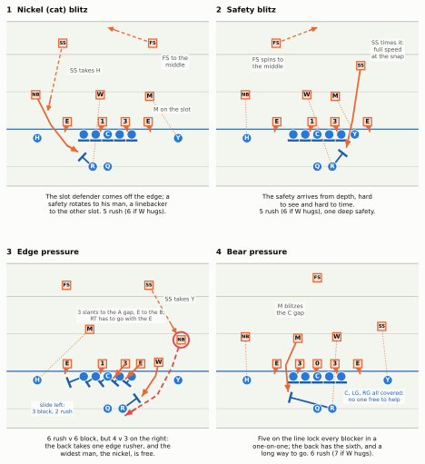
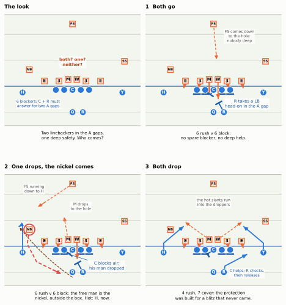
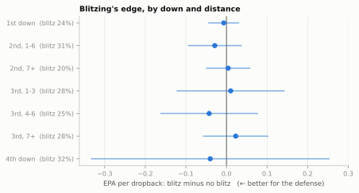

Blitzing: Numbers, Overloads, A-Gap Mugs, and Cover 0
Sending more than the offense can block: the arithmetic of the blitz, the families it comes in, the coverage that has to hold behind it, and why the numbers say it is a gamble, not a strategy
Show the Python (shared drawing helpers for this chapter)
import logginglogging.getLogger("matplotlib.font_manager").setLevel(logging.ERROR)import osimport warningswarnings.filterwarnings("ignore")import numpy as npimport pandas as pdimport matplotlib.pyplot as pltfrom matplotlib.patches import Circle, FancyArrowPatch, RegularPolygonfrom gridiron import Play, Player, Field, styleimport gridiron.play as _gp# Slightly smaller player markers than the book default, as in the pass-rush chapter: blitzes live between linemen._gp.draw_marker.__defaults__ = (None, 0.62)GREEN ="#0f7a55"# darker step of the aqua highlight, for text on the light fieldPURPLE = style.SERIES[6] # a ring colour that is neither offense blue nor defense orangeRED = style.SERIES[7] # the unblocked rusherOL_KEYS = ["LT", "LG", "C", "RG", "RT"]SPLIT =1.6# center-to-guard and guard-to-tackle spacing, as in the rest of the bookdef O(key, pos, d, w, label=None):return Player(key, pos, "off", d, w, label=key if label isNoneelse label)def D(key, pos, d, w, label):return Player(key, pos, "def", d, w, label=label)def line(labels="all"):"""The five offensive linemen. labels: 'all', 'C' (only the center: wide figures), or 'none'.""" out = []for k in OL_KEYS: lab = k if labels =="all"or (labels =="C"and k =="C") else"" out.append(O(k, k, -0.7, (OL_KEYS.index(k) -2) * SPLIT, lab))return outdef four_down(re_w=5.4):"""A generic four-man line: a wide end on each side, a 1-technique shaded on the center's left, a 3-technique on the right guard's outside shoulder."""return [D("LE", "DE", 1.0, -5.4, "E"), D("NT", "DT", 1.0, -0.7, "1"), D("DT", "DT", 1.0, 2.35, "3"), D("RE", "DE", 1.0, re_w, "E")]def to(p, key, end, kind="block", via=(), delay=0.0, speed=None):"""Move `key` through absolute (d, w) points `via` to `end` as a block, rush, path, route or drop.""" start = np.array(p._cur(key)) pts = [tuple(np.array(q) - start) for q in (*via, end)]if kind =="block":return p.block(key, pts=pts, delay=delay, speed=speed)if kind =="rush":return p.rush(key, pts=pts, delay=delay, speed=speed)if kind =="route":return p.route(key, [tuple(q) for q in (*via, end)], absolute=True, delay=delay, speed=speed)if kind =="drop":return p.drop(key, end, delay=delay, speed=speed)return {"path": p.path, "run": p.run}[kind](key, pts, delay=delay, speed=speed)def timed(p, key, way, kind="path"):"""Script a player for the frame strips: `way` = [(t, d, w), ...] absolute spots reached at time t (seconds after the snap). Standing still between two times is allowed.""" cur = np.array(p._cur(key), dtype=float) tc, wait =0.0, 0.0for t, d, w in way: nxt = np.array([d, w], dtype=float) dist =float(np.hypot(*(nxt - cur)))if dist <1e-3: wait += t - tcelse: p._add(kind, key, [tuple(cur), tuple(nxt)], speed=dist / (t - tc), delay=wait) wait =0.0 cur = nxt tc = treturn pdef _P(fld, p, d, w):return fld.xy(*p.to_abs(d, w))def say(fld, p, d, w, text, color=style.INK_2, fontsize=7.0, ha="center", weight="normal"):"""A short on-field label at (d, w).""" x, y = _P(fld, p, d, w) fld.ax.text(x, y, text, fontsize=fontsize, color=color, ha=ha, va="center", zorder=12, fontweight=weight, bbox=dict(boxstyle="round,pad=0.18", fc=style.SURFACE, ec="none", alpha=0.92))def point_to(fld, p, text_at, target, text, color=style.INK_2, fontsize=6.8, shrink=7):"""A label with a thin leader line to the player or spot it names.""" (xt, yt), (xp, yp) = _P(fld, p, *text_at), _P(fld, p, *target) fld.ax.annotate(text, (float(xp), float(yp)), xytext=(float(xt), float(yt)), fontsize=fontsize, color=color, ha="center", va="center", zorder=12, arrowprops=dict(arrowstyle="-", color=color, lw=0.7, shrinkA=2, shrinkB=shrink), bbox=dict(boxstyle="round,pad=0.18", fc=style.SURFACE, ec="none", alpha=0.92))def dashed(fld, p, pts, color=RED, lw=1.8, end="arrow", dash=(0, (3, 1.8)), z=6, alpha=1.0):"""A dashed path through absolute (d, w) points, ending in an arrow or a block bar ('tee'). dash="solid" with alpha < 1 draws the faded 'conditional rush' arrow (the hug).""" xs, ys = _P(fld, p, np.array([q[0] for q in pts]), np.array([q[1] for q in pts])) xs, ys = np.asarray(xs, float), np.asarray(ys, float) fld.ax.plot(xs, ys, color=color, lw=lw, ls=dash, zorder=z, alpha=alpha, solid_capstyle="round")if end =="arrow": fld.ax.add_patch(FancyArrowPatch((xs[-2] +0.6* (xs[-1] - xs[-2]), ys[-2] +0.6* (ys[-1] - ys[-2])), (xs[-1], ys[-1]), arrowstyle="-|>", mutation_scale=11, color=color, lw=lw, zorder=z, alpha=alpha))elif end =="tee": v = np.array([xs[-1] - xs[-2], ys[-1] - ys[-2]]) n = np.linalg.norm(v) perp = np.array([-v[1], v[0]]) / n *0.75 fld.ax.plot([xs[-1] - perp[0], xs[-1] + perp[0]], [ys[-1] - perp[1], ys[-1] + perp[1]], color=color, lw=lw +0.6, zorder=z)def ring(fld, p, key, color=RED, r=1.05, lw=1.9):"""A ring around a player at his alignment (drawn over paths, unlike Play.highlight).""" q = p.players[key] x, y = _P(fld, p, q.d, q.w) fld.ax.add_patch(Circle((float(x), float(y)), r, fc="none", ec=color, lw=lw, zorder=9.2))def clean(ax):"""Zoomed diagrams: drop hash ticks and yard numbers, clip text to the window."""for ln inlist(ax.lines): xs, ys = ln.get_data()iflen(xs) ==2and ln.get_linewidth() ==0.5and np.hypot(xs[1] - xs[0], ys[1] - ys[0]) <1.0: ln.remove()for t inlist(ax.texts):if t.get_text().isdigit() and t.get_alpha() ==0.55: t.remove()else: t.set_clip_on(True)def draw(p, width_in=6.4, ax=None, **kw):"""Play.draw, sized for the page and cleaned for a zoomed window.""" fld = p.draw(width_in=width_in, ax=ax, **kw) clean(fld.ax)return flddef panel_title(ax, text, size=8.4): ax.set_title(text, loc="left", fontsize=size, fontweight="bold", color=style.INK)def note_below(ax, text, size=6.8): ax.text(0.5, -0.02, text, transform=ax.transAxes, ha="center", va="top", fontsize=size, color=style.INK, linespacing=1.2)def pdf_build():return os.environ.get("RTG_FORMAT", "").lower() in ("pdf", "typst", "print")# --- frame strips (print) and video (web) for the simulated plays ---------------------------MARK_R =0.6RING_R =0.95def tracking(play): df = play.to_tracking() df["_id"] = df["displayName"].astype(str)return dfdef panel(ax, play, df, t, lateral, window, rings=(), links=()):"""One moment of a simulated play: markers, faint trails, rings, and 'who has whom' links.""" tmap = df.groupby("frameId")["time"].first() fid =int((tmap - t).abs().idxmin()) ylo, yhi =sorted((play.ball_y - lateral[0], play.ball_y - lateral[1])) fld = Field(ax=ax, orient="vertical", los=play.los, window=window, numbers=False, hashes=False, lateral=(ylo, yhi), to_go=play.to_go) cur = df[df["frameId"] == fid] shown = cur[cur["x"].between(play.los + window[0] +0.5, play.los + window[1] -0.5)& cur["y"].between(ylo +0.5, yhi -0.5) & (cur["side"] !="ball")] ids =set(shown["_id"]) t_from =min(0.0, t) trails = df[(df["frameId"] <= fid) & df["_id"].isin(ids) & (df["time"] >= t_from -2.5)]for (_, side), g in trails.groupby(["_id", "side"]): xs, ys = fld.xy(g["x"].values, g["y"].values) ax.plot(xs, ys, color=style.OFFENSE if side =="off"else style.DEFENSE, lw=0.9, alpha=0.4, zorder=3)for _, r in shown.iterrows(): x, y = (float(v) for v in fld.xy(r["x"], r["y"])) lab =str(r.get("label", "") or"")if r["side"] =="off": ax.add_patch(Circle((x, y), MARK_R, fc=style.OFFENSE, ec="white", lw=0.6, zorder=8)) tc ="white"else: ax.add_patch(RegularPolygon((x, y), 4, radius=MARK_R *1.3, orientation=np.pi /4, fc=style.DEFENSE_TINT, ec=style.DEFENSE, lw=1.0, zorder=8)) tc = style.INK fs =5.2iflen(lab) <=1else4.0 ax.text(x, y, lab, ha="center", va="center", fontsize=fs, color=tc, fontweight="bold", zorder=10)for key, col in rings: r = cur[cur["displayName"] == key].iloc[0] x, y = fld.xy(r["x"], r["y"]) ax.add_patch(Circle((float(x), float(y)), RING_R, fc="none", ec=col, lw=1.6, zorder=7))for a, b, col in links: pa = cur[cur["displayName"] == a].iloc[0] pb = cur[cur["displayName"] == b].iloc[0] xs, ys = fld.xy(np.array([pa["x"], pb["x"]]), np.array([pa["y"], pb["y"]])) ax.plot(xs, ys, color=col, lw=1.5, ls=(0, (1, 1.4)), zorder=9)return flddef strip(play, times, notes=None, lateral=(-9, 9), window=(-9, 6), ncols=3, rings=(), width_in=6.5, final_links=()):"""Numbered, captioned frame strip with a fixed box-sized window, so markers stay legible in print.""" df = tracking(play) nrows =int(np.ceil(len(times) / ncols)) pw = width_in / ncols span_w, span_d = lateral[1] - lateral[0], window[1] - window[0] fig, axes = plt.subplots(nrows, ncols, squeeze=False, figsize=(width_in, nrows * (pw * span_d / span_w + (0.62if notes else0.25))))for ax in axes.flat[len(times):]: ax.axis("off")for i, (ax, t) inenumerate(zip(axes.flat, times)): panel(ax, play, df, t, lateral, window, rings, final_links if i ==len(times) -1else ()) ax.set_title(f"{i +1}. "+ ("snap"ifabs(t) <1e-6elsef"{t:+.1f} s"), fontsize=8.2, color=style.INK_2, loc="left")if notes: note_below(ax, notes[i], size=6.9) fig.tight_layout(h_pad=1.0if notes else0.5, w_pad=0.5)return figdef video(play, times, notes=None, lateral=(-9, 9), window=(-9, 6), rings=(), width_in=5.4):"""Web version of the strip: every frame, with the strip's notes as running captions."""import shutilfrom matplotlib import animationfrom IPython.display import HTML, display df = tracking(play) span_w, span_d = lateral[1] - lateral[0], window[1] - window[0] fig, ax = plt.subplots(figsize=(width_in, width_in * span_d / span_w +0.4)) tmap = df.groupby("frameId")["time"].first()def update(fid): ax.clear() t =float(tmap[fid]) panel(ax, play, df, t, lateral, window, rings) txt ="snap"ifabs(t) <0.05elsef"{t:+.1f} s"if notes: cur = [n.replace("\n", " ") for tt, n inzip(times, notes) if tt <= t +1e-6] txt += (" "+ cur[-1]) if cur else"" ax.set_title(txt, fontsize=8.5, color=style.INK, loc="left")return [] frames = [f for f insorted(df["frameId"].unique()) iffloat(tmap[f]) >=min(times) -0.2] anim = animation.FuncAnimation(fig, update, frames=frames, interval=100) html = (anim.to_html5_video(embed_limit=40).replace("<video ", '<video style="max-width:100%;height:auto" ')if shutil.which("ffmpeg") else anim.to_jshtml(default_mode="once")) plt.close(fig) display(HTML(html))def blitz_animation(play, times, notes=None, **kw):"""Video on the website; a numbered, captioned frame strip in the PDF."""if pdf_build(): strip(play, times, notes=notes, **kw) plt.show()else: video(play, times, notes=notes, **{k: v for k, v in kw.items() if k in ("lateral", "window", "rings")})
Show the Python (the data behind this chapter’s numbers: nflverse via nflreadpy)
from gridiron.data import nfl, pbp# FTN charting (2022-2025): how many rushed on each dropback, and how many of them were "blitzers"SEAS = [2022, 2023, 2024, 2025]_ftn = nfl().load_ftn_charting(seasons=SEAS).to_pandas()[ ["nflverse_game_id", "nflverse_play_id", "n_blitzers", "n_pass_rushers"]]_pl = pbp(SEAS, columns=["game_id", "play_id", "season", "season_type", "week", "qtr", "time", "posteam","defteam", "qb_dropback", "down", "ydstogo", "epa", "success", "sack", "yards_gained","interception", "pass_attempt", "complete_pass", "touchdown", "desc"])_db = _pl[(_pl["qb_dropback"] ==1) & _pl["down"].notna()]ALLD = _db.merge(_ftn, left_on=["game_id", "play_id"], right_on=["nflverse_game_id", "nflverse_play_id"])ALLD = ALLD[ALLD["n_pass_rushers"].between(1, 11)].copy()ALLD["blitz"] = ALLD["n_pass_rushers"] >=5ALLD["big"] = ALLD["yards_gained"] >=20DB = ALLD[ALLD["season_type"] =="REG"].copy()BR = DB.groupby("season")["blitz"].mean()BR22, BR25, BR_ALL = BR[2022], BR[2025], DB["blitz"].mean()FIVE_OF_BLITZ = (DB.loc[DB["blitz"], "n_pass_rushers"] ==5).mean()SIX_PLUS = (DB["n_pass_rushers"] >=6).mean()def outcome(g):return pd.Series({"n": len(g), "epa": g["epa"].mean(), "sd": g["epa"].std(), "sack": g["sack"].mean(),"big": g["big"].mean(), "int": g["interception"].mean(), "succ": g["success"].mean()})OUT = pd.DataFrame({k: outcome(DB[DB["blitz"] == k]) for k in (False, True)}).TSD_RATIO = OUT.loc[True, "sd"] / OUT.loc[False, "sd"]# Team-seasons: blitz rate against EPA per dropback allowedTS = DB.groupby(["season", "defteam"]).agg(br=("blitz", "mean"), epa=("epa", "mean"), n=("epa", "size")).reset_index()TS = TS.merge(DB[DB["blitz"]].groupby(["season", "defteam"])["epa"].mean().rename("epa_b").reset_index(), on=["season", "defteam"])R_TS = TS["br"].corr(TS["epa"])TS["br_rank"] = TS.groupby("season")["br"].rank(ascending=False)TS["epa_rank"] = TS.groupby("season")["epa"].rank()def carry(col): out = []for s in SEAS[:-1]: a = TS[TS["season"] == s].set_index("defteam")[col] b = TS[TS["season"] == s +1].set_index("defteam")[col] out.append(a.corr(b))returnfloat(np.mean(out))K_BR, K_EPA, K_EB = carry("br"), carry("epa"), carry("epa_b")def team(t, s):return TS[(TS["defteam"] == t) & (TS["season"] == s)].iloc[0]MIN = {s: team("MIN", s) for s in (2023, 2024, 2025)}PHI = {s: team("PHI", s) for s in (2024, 2025)}MIN_ALL_FIRST =all(int(MIN[s]["br_rank"]) ==1for s in MIN)BR_MAX, BR_MIN = TS["br"].max(), TS["br"].min()# Situations: EPA per dropback with five or more rushers minus EPA with four or fewer_d, _y = DB["down"], DB["ydstogo"]SIT_ORDER = ["1st down", "2nd, 1-6", "2nd, 7+", "3rd, 1-3", "3rd, 4-6", "3rd, 7+", "4th down"]DB["sit"] = np.select([_d.eq(1), _d.eq(2) & _y.le(6), _d.eq(2), _d.eq(3) & _y.le(3), _d.eq(3) & _y.le(6), _d.eq(3), _d.eq(4)], SIT_ORDER, "other")_rows = []for s in SIT_ORDER: g = DB[DB["sit"] == s] a, b = g.loc[g["blitz"], "epa"].dropna(), g.loc[~g["blitz"], "epa"].dropna() _rows.append(dict(sit=s, diff=a.mean() - b.mean(), se=np.sqrt(a.var() /len(a) + b.var() /len(b)), rate=g["blitz"].mean(), sack_b=g.loc[g["blitz"], "sack"].mean(), sack_n=g.loc[~g["blitz"], "sack"].mean(), n_b=len(a), n=len(g)))SIT = pd.DataFrame(_rows).set_index("sit")RATE_3L, RATE_4 = SIT.loc["3rd, 7+", "rate"], SIT.loc["4th down", "rate"]# Participation (FTN, 2023-2025): the coverage behind the rush, and time to throw_part = nfl().load_participation(seasons=[2023, 2024, 2025]).to_pandas()[ ["nflverse_game_id", "play_id", "defense_coverage_type", "defense_man_zone_type", "time_to_throw","was_pressure"]].rename( columns={"nflverse_game_id": "gid_p"})P3 = ALLD[ALLD["season"] >=2023].merge(_part, left_on=["game_id", "play_id"], right_on=["gid_p", "play_id"], how="left")P3R = P3[P3["season_type"] =="REG"]_lab = P3R[P3R["defense_man_zone_type"].isin(["MAN_COVERAGE", "ZONE_COVERAGE"])]MAN_BY = _lab.groupby(["season", "blitz"])["defense_man_zone_type"].apply(lambda s: (s =="MAN_COVERAGE").mean()).unstack()MAN_B = (_lab.loc[_lab["blitz"], "defense_man_zone_type"] =="MAN_COVERAGE").mean()MAN_NB = (_lab.loc[~_lab["blitz"], "defense_man_zone_type"] =="MAN_COVERAGE").mean()_c0 = P3R[P3R["defense_coverage_type"] =="COVER_0"]C0_SIX = (_c0["n_pass_rushers"] >=6).mean()C0_FOUR = (_c0["n_pass_rushers"] <=4).mean()# pressure (FTN's was_pressure, sacks counted as pressured), blitz vs no blitz, and its year-to-year carry-overP3R = P3R.assign(press=P3R["was_pressure"].astype(float).fillna(0).gt(0) | P3R["sack"].eq(1))PR_B, PR_NB = P3R.loc[P3R["blitz"], "press"].mean(), P3R.loc[~P3R["blitz"], "press"].mean()_tsp = P3R.groupby(["season", "defteam"])["press"].mean()K_PR =float(np.mean([_tsp[s].corr(_tsp[s +1]) for s in (2023, 2024)]))_tt = P3R[P3R["time_to_throw"].notna() & P3R["pass_attempt"].eq(1)]TTT = _tt.groupby(_tt["n_pass_rushers"].clip(3, 7))["time_to_throw"].median()# Super Bowl LVIII (February 2024): Kansas City's six- and seven-man rushes in the fourth quarter and overtimeSB = P3[(P3["game_id"] =="2023_22_SF_KC") & (P3["defteam"] =="KC")]SB_LATE = SB[(SB["qtr"] >=4) & (SB["n_pass_rushers"] >=6)]SB_LATE_N =len(SB_LATE)SB_LATE_C0 =int((SB_LATE["defense_coverage_type"] =="COVER_0").sum())SB_LATE_INC =int(((SB_LATE["pass_attempt"] ==1) & (SB_LATE["complete_pass"] ==0) & (SB_LATE["sack"] ==0)).sum())SB_LATE_YDS =int(SB_LATE["yards_gained"].sum())SB_LATE_TD =int(SB_LATE["touchdown"].sum())_ot = SB[(SB["qtr"] ==5) & SB["time"].astype(str).str.startswith("07:29")].iloc[0]OT_RUSH =int(_ot["n_pass_rushers"])_ot2 = SB[(SB["qtr"] ==5) & SB["time"].astype(str).str.startswith("12:38")].iloc[0]OT2_RUSH, OT2_YDS =int(_ot2["n_pass_rushers"]), int(_ot2["yards_gained"])# Brian Flores's 2024 Vikings: three games, three uses of the blitzdef game(gid, tm="MIN"): g = P3[(P3["game_id"] == gid) & (P3["defteam"] == tm)]returndict(db=len(g), br=g["blitz"].mean(), c0=int((g["defense_coverage_type"] =="COVER_0").sum()), sacks=int(g["sack"].sum()), ints=int(g["interception"].sum()), epa=g["epa"].mean())V1, V3, VWC = game("2024_01_MIN_NYG"), game("2024_03_HOU_MIN"), game("2024_19_MIN_LA")def pct(x):returnf"{100* x:.0f}%"def word(n):return {4: "four", 5: "five", 6: "six", 7: "seven", 8: "eight"}.get(int(n), str(int(n)))def ordn(x): n =int(round(float(x)))returnf"{n}"+ ("th"if10<= n %100<=20else {1: "st", 2: "nd", 3: "rd"}.get(n %10, "th"))
Third-and-6 near midfield. As the offense settles at the line, two linebackers walk forward and plant themselves in the gaps on either side of the center, close enough to touch him. A safety starts creeping down from 12 yards toward the slot receiver. The center points at one of the linebackers and shouts a number; the quarterback steps up behind him, points at the other one and shouts a word. At the snap, the linebacker the center pointed at turns and runs backward into coverage, and the center is left blocking air. The other one hits the gap. The running back steps up to meet him, and from the far edge the slot cornerback comes untouched, sprinting at the quarterback’s back. The quarterback never looks at him. He has already thrown, on his third step, a quick hitch to the slot receiver the cornerback left behind, who catches it in front of the safety still running down from 12 yards. Nine yards, first down. The announcer says the defense “brought the house and got burned.” It didn’t, quite: six rushed against six blockers, and the cornerback was left unblocked on purpose, by the offense. To see why, you have to count the way coaches do.
You’ll be able to:
Do blitz math on the broadcast: count the rushers and the blockers, say who will come unblocked, and point to where the quick “hot” throw should go.
Tell a Cover 1 blitz from a Cover 0 blitz by the safeties, and explain what each one bets.
Recognise an overload, and explain how a blitz can beat a protection that has enough blockers in total.
Name the blitz families (nickel, safety, edge and bear pressure) from where the extra rusher lines up.
Read a double A-gap mug and explain why two linebackers standing over the center scramble a protection’s rules.
Explain what the data says about blitzing: why it raises the stakes on a snap without, on average, helping the defense, and when it still makes sense.
NoteYou’ll need
The Pass Rush: four rushers is the default because it leaves seven in coverage; rushers win with get-off, moves and stunts; pressure, not sacks, is the measure. This chapter is what a defense does when it stops trusting its four.
Man Coverage: Cover 1 (man on everyone plus one deep safety) and Cover 0 (man on everyone, nobody deep); the spare defender who can rob or lurk; inside and outside leverage; and the “hug” rule, in which a defender whose man stays in to block rushes instead.
A First Look at Defense: a blitz is five or more rushers, whoever they are; a linebacker rushing in a four-man rush is not one.
How to read the diagrams. Offense is blue circles, defense orange squares, and left and right are the offense’s. The linemen are LT, LG, C, RG and RT (on the wide figures only the center is labelled); Q is the quarterback and R the running back; X, Z, H, Y and A are receivers. On defense, E is an end and the defensive tackles are labelled by technique (1 shaded on the center, 3 on a guard’s outside shoulder, 0 head-up on the center); M and W are the Mike and Will linebackers, NB the nickel back, CB the cornerbacks, FS and SS the safeties. A solid orange arrow is a rusher; a faded orange arrow is a conditional rusher, who comes only if the man he is covering stays in to block; a dashed orange line is a defender dropping or rotating into coverage; a dotted orange line joins a man defender to his receiver. A blue line ending in a short bar is a block. A red ring marks the unblocked rusher, and a dashed red arrow is the path he takes. A purple ring marks the player to watch: the one the caption is about. A dashed brown arrow is the throw.
Why blitz at all: buying a rusher with a defender
Every defense starts each passing down with the same budget: eleven players, split between rushing the quarterback and covering receivers. The offense spends its own budget first, in the huddle: five linemen who must block, plus however many backs and tight ends it keeps in, and everybody else runs a route. Most of the time the defense rushes four and covers with seven (The Pass Rush explains why that is the balance point). A blitz moves one or more players from the coverage column to the rush column.
What does the defense want from that trade? Not sacks, mostly. It wants time taken away. The quarterback in today’s NFL typically needs about two and a half seconds to let the ball go on an ordinary dropback; a blitz is an attempt to make that impossible, to put a rusher in his lap before the routes have finished, so that he has to throw early, throw somewhere he didn’t want to, or hold the ball and get hit. In FTN’s charting of the 2023–2025 regular seasons the median pass against four rushers came out after 2.5 seconds; against six it was 2.2, and against seven 2.0.1 Those few tenths are the whole point: they are the difference between a quarterback who can wait for a deep route to clear and one who cannot.
The price is paid in the back end: each extra rusher is one fewer defender in coverage, one less helper over the top and one fewer tackler for a receiver who catches a short ball. A blitz is a bet that the time it removes is worth more than the coverage it costs, and the last third of this chapter shows how often that bet pays.
How often do defenses make it? In FTN’s charting, about one dropback in four: 25% of regular-season dropbacks from 2022 through 2025 faced five or more rushers (20% in 2022, 27% in 2025; part of that rise may be the charters rather than the coaches, so read the trend loosely).2 And most of those blitzes are small: 77% of them sent exactly five. Only 6% of all dropbacks faced six or more. The all-out, everybody-comes blitz that broadcasts love to replay is the rare, high-stakes end of a mostly modest habit.
ImportantWhy it exists
The blitz exists because a defense that cannot win with four still needs the quarterback to throw before his receivers are ready. Adding rushers is the bluntest way to shorten his clock. What it gives up: a defender in coverage for every rusher it adds, which is why most blitzes add one, and why almost every blitz is designed around a quick throw the defense knows is coming.
Blitz math: three counts and one question
Coaches on both sides of the ball think about a blitz as a short piece of arithmetic. You can do it from the couch, and once you can, a blitz stops being a blur.
Count 1: rushers against blockers. How many defenders can rush, and how many blockers does the offense have? Five linemen always block; a running back or tight end may stay in to make six or seven. If the rushers outnumber the blockers, somebody comes free by arithmetic. If they don’t, nobody should, and a free man means somebody made a mistake or the defense has outsmarted the rules.
Count 2: coverage defenders against receivers. Whatever is left after the rush has to cover whoever is left after the protection. Seven rushers leaves four defenders for, say, four receivers: man on everyone, no help anywhere. Five rushers against a six-man protection leaves six defenders for four receivers: room for a deep safety and a spare man underneath.
Count 3: by side. The first two counts are totals, but blocking happens in places. A protection that has six blockers for six rushers can still lose if four of those rushers arrive on a side with three blockers. Hold that thought for the section on overloads; it is the key to most clever blitzes.
The question: who is the unblocked rusher? When the rushers outnumber the blockers, one man will come untouched. This chapter calls him the unblocked rusher: the rusher the protection leaves alone on a particular snap. Pass Protection called a man left alone on purpose a free rusher and gave the offense’s rule for choosing him: block inside-out. The inside rushers have the shortest path to the quarterback, so the blockers take them first and leave the widest man, whose path is longest, because the ball can be out before he arrives. A second rule works the same way: most protections count only the box (the defenders lined up between the tackles and a few yards deep), so a nickel, corner or safety who blitzes from outside it is the quarterback’s to beat, with the ball, not the line’s to block. For the rest of the chapter, “the widest man” is shorthand for all of this: the rusher the offense chooses to leave, because he has the farthest to run. The defense knows these rules too, and the whole art of blitz design is to defeat them: to make the man who comes free the one with the shortest path, or one the quarterback cannot see, or one nobody expected to rush at all.
Put the counts together and you get a small table that every coordinator carries in his head.
Blitz math. Seven-man protections and three-man rushes follow the same logic. The “free by arithmetic” column is only the floor: overloads and mugs try to free a rusher even when the numbers match.
Rushers
Blockers
Free by arithmetic
Coverage vs receivers
What the quarterback must do
4
5 (empty)
none
7 vs 5
read the coverage; there is help everywhere
5
6 (back stays in)
none, if everyone is right
6 vs 4
a normal read, slightly faster
5
5 (empty, or a back who releases)
none, but no spare blocker
6 vs 5
get it out on time; one mistake is a free man
6
5 (empty, or a back who releases)
one
5 vs 5, nobody deep
throw hot, now
6
6 (back stays in)
none, if everyone is right
5 vs 4
quick; one mistake is a free man
7
6 (back stays in)
one
4 vs 4, nobody deep
throw hot, now
Two rows deserve a second look. In the third, five against five, nobody is free, but there is no spare blocker either, so one confused assignment produces a man nobody blocks. In the fifth, six against six, the offense has “enough,” yet the defense still has five defenders for four receivers: man on everyone with one spare. That is the shape of most real blitzes. The defense does not usually try to out-number the protection. It tries to make it guess.
Where does the quarterback throw when somebody does come free? To the hot receiver, and which one depends on the coverage behind the blitz:
If a defender left a receiver or an area to rush, throw there. Against zone it is the area the blitzer was guarding; against man it is the receiver he was covering, until someone rotates over. This is why the hot throw is usually on the same side the free rusher comes from: the free rusher is the blitzer, and the receiver he left is standing right where he started. The quarterback is not throwing at the rusher; he is throwing to the man the rusher left, before the rusher arrives.
If every receiver is still covered (a man blitz in which the extra rusher had no receiver of his own), there is no hole. Throw to the matchup you like, on a route that breaks away from the defender’s leverage.
Every blitz design, read from the defense’s side, is also a guess about where that throw will go, and many of them are built to take it away.
CautionCommon misconception
“The unblocked guy means somebody missed a block.” Sometimes. Just as often, the offense left him on purpose, because its protection had more rushers than blockers and its rules chose him: the widest man. Whether the play was a bust or a success depends on what the quarterback did: if he threw hot before the unblocked rusher arrived, the protection worked exactly as designed. The tell is the quarterback’s timing. A ball out on the third step, to a receiver who was already looking for it, was planned.
Man pressure, part 1: the Cover 1 blitz
Most blitzes travel with man coverage, and the reason is the hole. In a zone, each defender guards an area; send one of them after the quarterback and his area is empty, and the hot throw goes straight into it. In man coverage it depends on who blitzes. If the blitzer is the spare defender, the one with no receiver of his own, every receiver is still covered and the defense has lost only a helper. If he is a man defender, his receiver is uncovered until someone rotates over to him: a hole, but a brief one, and the blitz families later in the chapter are largely about who rotates and how fast. Either way, when the defense blitzes, man coverage behind it roughly doubles. In FTN’s charting of 2023–2025, defenses played man on 33% of labelled dropbacks with four or fewer rushers, and on 60% when they sent five or more.3 The rest are zone blitzes, the subject of Zone Blitzes, Fire Zones, and Simulated Pressure, whose whole design problem is filling the hole the blitzer leaves.
The everyday man pressure is the Cover 1 blitz: man coverage on every eligible receiver, one deep safety in the middle as help, and the spare defenders sent after the quarterback. Its most common form is a five-man pressure: exactly five rushers, the four linemen plus one linebacker or defensive back.
Figure 40.1: A Cover 1 blitz against 11 personnel (one back, one tight end, three receivers), third-and-7. Five defenders are in man coverage (dotted lines): the cornerbacks (CB) on X and Z, the nickel (NB) on the slot H, the strong safety (SS) on the tight end Y, and the Will (W) on the running back. The free safety (FS) has the deep middle. The fifth rusher is the Mike (M, ringed purple), who blitzes through the right A gap; the back’s rule is to stay in and block the first linebacker who comes, so he steps up to meet him. Now the Will’s man is blocking, so the Will has no one to cover: under the hug rule he rushes too (the faded arrow), making six rushers against six blockers. Everyone is accounted for, but only if every blocker gets his man.
Walk through Figure 40.1 with the three counts. Rushers against blockers: five against six (the five linemen and the back), so on paper the offense can block everyone. Coverage against receivers: five defenders in man on five eligible receivers, plus the free safety deep. The side count: the Mike comes through the right A gap, on the back’s side, so the back has a short, straight trip to meet him. (Picking up a linebacker is easy when the back is lined up on his side and hard when he has to cross the formation to get there; keep that in mind for the bear pressure later.)
Then the twist that makes this a real blitz rather than a five-man rush the offense handles easily. When the back stays in to block, the Will, who was assigned to him in man coverage, has nobody to cover. Most defenses tell him to hug: to rush the moment he sees his man block. Now it is six against six. Everyone is still accounted for, but the offense has no spare blocker left at all, and the coverage still has a deep safety. If any blocker hesitates, two blockers take the same man, or the back meets the Mike a yard too late, someone comes through clean. The rule cuts the other way too: if the back releases into a route instead, the Will must peel off and cover him, and a back swinging out of the backfield past a linebacker who started toward the quarterback is one of the oldest blitz-beaters there is. (The hug is one kind of delayed blitz, a rusher who comes a beat after the snap. Some linebackers delay on purpose, waiting until the blockers have picked their men and then running through whatever gap is left.)
That is the design philosophy of the Cover 1 blitz: keep the safety, make the protection perfect. It is cheap in coverage, because the deep middle stays protected and every receiver has a man, and it is cheap in risk, because a receiver who beats his man still has a safety coming. Its weakness is that it does not guarantee anything. A good protection blocks it, a good quarterback reads it as man coverage and throws to the matchup he likes, and the defense has spent a linebacker to get a rush that would have been blocked anyway.
NoteMadden vs. real life
In Madden a blitz is a play you pick from the menu, and every player runs exactly the path drawn on it. Real blitzes have rules inside them. The Will in Figure 40.1 does not know before the snap whether he is a rusher or a cover man; the back decides that for him, after the snap, by blocking or by running a route. Many blitzes branch like this (“if your man blocks, rush; if he releases, cover him”), which is why the same call can produce five rushers on one snap and six on the next. Nobody learns those rules on the field. The coordinator radios one word to the green-dot defender (What a Play Really Is explains the helmet radio), he repeats it in the huddle, and each player already knows his branch of it, because the call and its rules were installed in meetings and practice all week.
NoteGo deeper: blitz dialects
Every staff has its own words. The hug is also called a “green dog” or an “add-on” rusher. A “dog” is still a linebacker blitz in many playbooks (the history section has where that comes from). “Cat” is the nickel in many playbooks (hence cat blitz), but in others “cat” or “cougar” means a corner blitz. When a broadcaster or a coach uses a name, ask who came and from where; that is what the name is trying to say.
Man pressure, part 2: the Cover 0 blitz
Take the deep safety away and you have the Cover 0 blitz: man coverage on every eligible receiver, nobody deep, and every defender not covering someone sent after the quarterback. Man Coverage built Cover 0 from the coverage side: the safety’s job disappears, so he and the spare man become rushers. Here is the same idea from the rush side, against the formation that makes the arithmetic starkest: an empty backfield, where the five linemen are the only blockers.
Figure 40.2: A Cover 0 blitz against an empty formation (five receivers, so only the five linemen can block), third-and-4. The defense rushes six: the four linemen plus the Mike and Will, who were standing in the gaps. Five defenders play man on five receivers with nobody deep, each a step or two inside his receiver (inside leverage: no one is in the middle to help, so they take the inside away). The line blocks inside-out, each lineman taking the gap to his inside, and leaves the widest rusher, the right end (ringed red), unblocked; with a clear path he arrives in a little under two seconds. The quarterback must beat him: here with a quick out by H, run a yard past the sticks and thrown on rhythm at about 1.3 seconds, toward the sideline his defender’s inside leverage concedes. Z’s fade is the shot: if he wins at the line, there is nobody behind him.
The math in Figure 40.2 is brutal. Six rushers against five blockers: one is free by arithmetic, and the line’s inside-out rule makes it the right end, the widest man. Five defenders against five receivers: nobody left over, nobody deep. The quarterback has the time it takes that end to arrive, a little under two seconds. He cannot read the coverage, because there is nothing to read: everybody is in man. He has to pick the matchup before the snap, take a short drop and throw on rhythm.
Where? Look at how the defenders line up. With nobody in the middle of the field behind them, a man defender who lets his receiver cut inside has given up a catch with open grass in front of it and nobody coming to tackle. So Cover 0 defenders take inside leverage: they line up toward the middle and dare the receiver to go outside. That makes the classic answers outside-breaking quick routes (the quick out, the speed out, a whip or pivot route that fakes in and breaks out) and, for the brave, the fade: a receiver who beats a pressed corner at the line has nobody between him and the end zone. The figure shows both. The out is the safe hot throw; the fade is the throw that turns a third-and-4 into a touchdown. Defenses choose how tight to play it. “Zero press” puts everyone up close to deny every quick throw and lives with the fade; “off zero” gives a few yards of cushion against the fade and rallies to the short throw. Both are common, and the cushion you see before the snap tells you which throw the defense fears more.
Why would a defense take that deal? Because the arithmetic cuts both ways. The offense has to be perfect too: the right protection, a quarterback who sees it, a receiver who wins quickly, and a throw on time with a rusher arriving. Any one of those failing is a sack, an incompletion or worse. In the charted seasons, Cover 0 got the ball out fastest of any coverage and also gave up a 20-yard play on about one dropback in seven between the 20-yard lines, the highest rate of any coverage (Man Coverage has the chart): it compresses the play into a single high-stakes moment. Even an all-out blitz is not a free-for-all, either. The edge rushers still keep contain (they stay outside the quarterback so he cannot escape around them, the rush-lane discipline of The Pass Rush), because a quarterback who slips out of a zero has nobody deep to stop him; against a fast quarterback, many defenses give up a rusher to spy him (shadow him from a few yards off) instead. Not every Cover 0 is an all-out blitz, either. Of the dropbacks FTN labelled Cover 0 in 2023–2025, 50% had six or more rushers, but 23% had four or fewer, the “zero lurk” or “zero hole” versions in which the spare men sit in the middle and wait for the hot throw instead of rushing.
ImportantWhy it exists: the Cover 0 blitz
The Cover 0 blitz exists to end the play before it starts. It guarantees an unblocked rusher against any protection the offense has not built to beat it, and it covers every receiver, so the quarterback must win a race and a matchup at once. It belongs where the field is short and the throw has to be quick anyway (third-and-short, fourth down, the red zone) and where surprise is high. What it gives up: every margin. One missed tackle, one blown assignment, one receiver who wins at the line or one quarterback who escapes the pocket is a touchdown.
Overloads: winning the count on one side
Here is where blitz design gets clever. The offense can almost always match the defense’s total: six rushers against a six-man protection, everyone accounted for. But blockers block where they stand. An overload blitz sends more rushers at one side of the protection than the blockers on that side can handle, so that a man comes free there even though the totals match.
The natural target is the half-slide, the NFL’s everyday six-man protection. Recall how it works: the center and the two linemen on one side slide that way and own gaps (the slide side), the two linemen on the other side block the man in front of them (the man side), and the back takes the next threat on the man side. That makes the man side the thin side. It has three blockers (guard, tackle, back), the same as the slide side, but the back is the smallest of them and the last to know what is coming. Either side can be overloaded, since each has only three blockers, but the man side is the favourite target. An overload aims four rushers at it.
Count the overload in Figure 40.3 by side. Left of the center: two rushers (the 1-technique and the left end) against three blockers (center, left guard, left tackle). Right of the center: four rushers (the Will, the 3-technique, the right end and the safety) against three (right guard, right tackle, back). Six against six in total, and still one free, because the protection put its extra blocker where the defense wasn’t.
Show the Python
def overload_play(): off = line() + [O("QB", "QB", -5.0, 0.0, "Q"), O("RB", "RB", -5.0, 2.0, "R"), O("Y", "WR", -1.2, 8.6)] dfn = four_down() + [D("WILL", "WILL", 4.5, 2.4, "W"), D("SS", "SS", 7.6, 6.4, "SS"), D("NB", "NB", 4.6, 9.4, "NB")] p = Play(off, dfn, los=40, to_go=None) p.motion("WILL", to=(1.4, 0.8), speed=2.2) p.motion("SS", to=(4.2, 6.9), speed=2.4) timed(p, "QB", [(0.5, -6.3, 0.0), (1.45, -6.3, 0.0), (1.8, -7.2, -0.5)])# slide side: the line steps left; only two rushers come there timed(p, "LE", [(0.5, -0.4, -5.7), (1.0, -1.6, -5.6), (1.8, -2.6, -5.0)], "rush") timed(p, "LT", [(0.5, -1.4, -4.1), (1.0, -2.1, -4.5), (1.8, -2.9, -4.2)], "block") timed(p, "LG", [(0.4, -1.2, -2.3), (1.0, -1.7, -2.2), (1.8, -2.0, -1.9)], "block") timed(p, "NT", [(0.4, 0.1, -0.9), (1.0, -0.4, -0.9), (1.8, -0.8, -0.9)], "rush") timed(p, "C", [(0.4, -1.3, -0.8), (1.0, -1.5, -0.9), (1.8, -1.8, -0.9)], "block")# man side: guard on the 3, tackle on the end timed(p, "DT", [(0.4, 0.1, 2.2), (1.0, -0.5, 2.1), (1.8, -0.9, 2.0)], "rush") timed(p, "RG", [(0.4, -1.2, 1.9), (1.0, -1.5, 1.9), (1.8, -1.9, 1.8)], "block") timed(p, "RE", [(0.5, -0.3, 5.4), (1.0, -1.0, 5.1), (1.8, -1.3, 4.9)], "rush") timed(p, "RT", [(0.5, -1.4, 3.7), (1.0, -1.9, 3.9), (1.8, -2.3, 3.7)], "block")# the overload: Will up the A gap (shortest path), safety off the edge timed(p, "WILL", [(0.35, 0.3, 0.8), (0.9, -2.4, 0.7), (1.45, -5.5, 0.25), (1.8, -6.6, -0.3)], "rush") timed(p, "SS", [(0.4, 1.8, 7.5), (0.9, -1.0, 7.5), (1.3, -2.4, 7.2), (1.8, -2.6, 7.1)], "rush")# the back's mistake: he steps outside to the safety timed(p, "RB", [(0.3, -4.7, 2.7), (0.9, -3.9, 5.4), (1.3, -3.7, 6.0), (1.8, -3.8, 6.0)], "block")# the hot route that never gets thrown: Y's quick slant into the space the safety left timed(p, "Y", [(0.5, 1.8, 8.7), (0.9, 3.4, 6.9), (1.5, 5.4, 4.0), (1.8, 6.2, 2.9)], "route") timed(p, "NB", [(0.5, 4.8, 8.9), (0.9, 5.0, 7.8), (1.5, 6.4, 5.4), (1.8, 7.0, 4.2)], "path")return pblitz_animation(overload_play(), [-1.6, 0.0, 0.6, 1.0, 1.45, 1.8], notes=["W walks into the A gap;\nSS creeps down outside", "snap: the line slides left,\naway from both of them","R drifts outside,\ntoward the safety", "R takes SS; W is in\nthe A gap untouched","W arrives: shortest path.\nY is open, too late", "sack, from a rusher\nthe rules said was R's"], lateral=(-7.2, 11.2), window=(-8.6, 9.2), ncols=3, rings=(("WILL", RED), ("RB", PURPLE)))
Figure 40.3: An overload blitz against a half-slide, and a back who picks the wrong man (simulated; zoomed on the offense’s right side; the far-left receivers and their defenders are off the frame). Before the snap the Will (W, ringed red) walks into the right A gap and the strong safety (SS) creeps down outside the right tackle. The protection slides left, away from them: the center, left guard and left tackle block the left A, B and C gaps, where only two rushers come. On the man side, the right guard takes the 3-technique, the right tackle the end, and the back (R, ringed purple) has ‘the next threat’. There are two: the Will inside and the safety outside. The rule says inside first. The walk-up came too late for the quarterback to reset the slide toward it, so the back has to get it right. His eyes go to the safety, the more obvious threat; he steps out to take him, and the Will runs untouched up the A gap, the shortest path on the field, and reaches the quarterback in about a second and a half, before the hot slant to Y can be thrown.
The back’s mistake made it worse, but notice that even a perfect back could only choose which man came free. Had he taken the Will, the safety would have been unblocked instead: the widest man, the one the offense is happy to give up. That is Figure 40.4.
So the overload is not really a way to win the count; it is a way to choose the battle. Handled correctly, it produces a free rusher from the edge and a quick throw, the trade the offense wanted. Handled wrongly (a slide the wrong way, a back who looks outside first, a quarterback who misses the hot throw), it produces a free rusher up the middle, the trade the defense wanted.
Figure 40.4: The same overload, played by the rules. The back takes the inside threat, the Will in the A gap, because inside rushers have the shortest path. That leaves the safety (ringed red) unblocked: the widest man, roughly two seconds from the quarterback. The quarterback knows it from the pre-snap picture, so he throws hot: a quick slant by Y into the space the safety left, out of his hand at about 1.1 seconds. The protection did not block everyone. It chose who would be free, and the quarterback beat him.
That is why the offense’s real weapon against overloads is information, before the snap. The quarterback and center watch for the overload forming (a linebacker walking into a gap, a safety creeping down, a nickel inching toward the line) and move the protection toward it: they reset the Mike identification so that the slide, and its three blockers, go to the loaded side, and the thin man side faces the lighter one. The defense’s answer to that is timing. It disguises the overload until the last second, shows it to one side and brings it from the other, or walks the safety down so late that the protection cannot be reset without a timeout. In one snap you are watching both sides try to make the other side’s count wrong.
The blitz families: who comes
Ask a defensive coach about a blitz and he will usually name it by who comes and from where. The names vary from staff to staff, but most blitzes belong to a handful of families, and each family has its own reason to exist. The families overlap (a nickel off the edge is both a nickel blitz and edge pressure), so use the rule coaches use: name it for the surprise. One defensive back coming is a nickel or safety blitz; two or more rushers built to win the same edge is edge pressure.
Nickel (cat) blitz (panel 1 of Figure 40.5). In today’s NFL the most common extra rusher is not a linebacker at all but the slot cornerback. A nickel blitz sends him, usually off the edge from his slot alignment, while a safety rotates down to take the receiver he left; many defenses’ code word for the nickel is “cat,” so coaches often call it a cat blitz. Why him? Because he lines up outside the box, where the protection does not count him, and because he is fast: five or six yards outside the tackle, running at full speed, he can arrive as quickly as a linebacker from inside. The trade is in coverage, and it is the “brief hole” from earlier in the chapter: the safety rotating down to the slot has to cover a quick receiver in space from a long way off, and until he gets there the slot receiver is exactly the hot throw the offense will look for. Someone also has to take the other slot, and in many defenses that is a linebacker, a mismatch the offense will happily throw at.
Show the Python
LAT_F, WIN_F = (-13.0, 13.0), (-7.6, 14.4)def fam_offense(te=False, rb_w=2.0): out = line("C") + [O("QB", "QB", -5.0, 0.0, "Q"), O("RB", "RB", -5.0, rb_w, "R"), O("H", "WR", -1.2, -9.4)] out += [O("Y", "TE", -0.7, 5.0)] if te else [O("Y", "WR", -1.2, 9.4)]return outdef short_rush(p, keys):for k in keys: q = p.players[k] to(p, k, (-0.3, q.w + (0.3if q.w >0else-0.3)), "rush")def short_sets(p, keys=OL_KEYS):for k in keys: q = p.players[k] to(p, k, (-1.5, q.w))fig, axes = plt.subplots(2, 2, figsize=(6.6, 7.5))# 1. nickel (cat) blitzp = Play(fam_offense(rb_w=-2.0), four_down() + [D("MIKE", "MIKE", 4.4, 5.6, "M"), D("WILL", "WILL", 4.6, -1.0, "W"), D("NB", "NB", 4.6, -9.6, "NB"), D("SS", "SS", 11.5, -6.0, "SS"), D("FS", "FS", 11.5, 6.0, "FS")], los=40, to_go=None)short_rush(p, ["LE", "NT", "DT", "RE"]); short_sets(p)to(p, "NB", (-3.0, -4.0), "rush", via=[(0.6, -7.6), (-2.2, -5.4)])to(p, "SS", (2.4, -8.0), "drop"); to(p, "FS", (13.6, 0.0), "drop")to(p, "RB", (-3.7, -3.4))p.man("MIKE", "Y"); p.man("WILL", "RB")fld = draw(p, ax=axes[0, 0], title=False, lateral=LAT_F, window=WIN_F)say(fld, p, 7.8, -3.0, "SS takes H", fontsize=6.3)say(fld, p, 9.0, 9.0, "FS to the\nmiddle", fontsize=6.3)say(fld, p, 2.6, 8.6, "M on the slot", fontsize=6.3)panel_title(axes[0, 0], "1 Nickel (cat) blitz")note_below(axes[0, 0], "The slot defender comes off the edge; a\nsafety rotates to his man, a linebacker\nto the other slot. 5 rush (6 if W hugs).")# 2. safety blitzp = Play(fam_offense(te=True), four_down(re_w=6.7) + [D("MIKE", "MIKE", 4.4, 2.4, "M"), D("WILL", "WILL", 4.6, -1.4, "W"), D("NB", "NB", 4.6, -9.6, "NB"), D("SS", "SS", 8.5, 5.8, "SS"), D("FS", "FS", 11.5, -5.5, "FS")], los=40, to_go=None)short_rush(p, ["LE", "NT", "DT", "RE"]); short_sets(p)to(p, "SS", (-2.4, 3.9), "rush", via=[(1.2, 4.7)])to(p, "RB", (-3.2, 3.4))to(p, "FS", (13.6, 0.0), "drop")p.man("MIKE", "Y"); p.man("WILL", "RB"); p.man("NB", "H")fld = draw(p, ax=axes[0, 1], title=False, lateral=LAT_F, window=WIN_F)say(fld, p, 10.6, 9.4, "SS times it:\nfull speed\nat the snap", fontsize=6.3)say(fld, p, 8.8, -6.6, "FS spins to\nthe middle", fontsize=6.3)panel_title(axes[0, 1], "2 Safety blitz")note_below(axes[0, 1], "The safety arrives from depth, hard\nto see and hard to time.\n5 rush (6 if W hugs), one deep safety.")# 3. edge pressure: the slide goes left, the overload comes rightp = Play(fam_offense(), [D("LE", "DE", 1.0, -5.4, "E"), D("NT", "DT", 1.0, -0.7, "1"), D("DT", "DT", 1.0, 2.35, "3"), D("RE", "DE", 1.0, 4.4, "E"), D("WILL", "OLB", 1.2, 6.8, "W"), D("MIKE", "MIKE", 5.6, -2.4, "M"), D("NB", "NB", 4.2, 9.8, "NB"), D("SS", "SS", 11.5, 5.5, "SS"), D("FS", "FS", 11.5, -5.5, "FS")], los=40, to_go=None)short_rush(p, ["LE", "NT"])for k, spot in (("LT", (-1.5, -5.2)), ("LG", (-1.5, -2.8)), ("C", (-1.5, -1.0)), ("RG", (-1.5, 0.9)), ("RT", (-1.6, 2.5))): to(p, k, spot)to(p, "WILL", (-3.3, 4.6), "rush", via=[(-0.6, 6.4)])to(p, "RB", (-3.6, 3.9))to(p, "SS", (5.0, 9.2), "drop")p.man("MIKE", "H")fld = draw(p, ax=axes[1, 0], title=False, lateral=LAT_F, window=WIN_F)dashed(fld, p, [(4.2, 9.8), (0.6, 8.6), (-3.2, 6.6), (-6.0, 2.2)])# the two slants, drawn bold over the line so they read at print sizedashed(fld, p, [(1.0, 2.35), (-0.9, 0.8)], color=style.DEFENSE, lw=2.0, dash="solid", z=11)dashed(fld, p, [(1.0, 4.4), (-1.0, 2.4)], color=style.DEFENSE, lw=2.0, dash="solid", z=11)ring(fld, p, "NB")say(fld, p, 7.4, 1.8, "3 slants to the A gap, E to the B;\nRT has to go with the E", fontsize=5.9)say(fld, p, -5.0, -7.4, "slide left:\n3 block, 2 rush", fontsize=6.0, color=style.OFFENSE_DARK)say(fld, p, 9.6, 9.6, "SS takes Y", fontsize=6.3)panel_title(axes[1, 0], "3 Edge pressure")note_below(axes[1, 0], "6 rush v 6 block, but 4 v 3 on the right:\nthe back takes one edge rusher, and the\nwidest man, the nickel, is free.")# 4. bear pressurep = Play(fam_offense(), [D("LE", "DE", 1.0, -5.4, "E"), D("L3", "DT", 1.0, -2.35, "3"), D("N", "NT", 1.0, 0.0, "0"), D("R3", "DT", 1.0, 2.35, "3"), D("RE", "DE", 1.0, 5.4, "E"), D("MIKE", "MIKE", 4.4, -2.6, "M"), D("WILL", "WILL", 4.6, 2.6, "W"), D("NB", "NB", 4.6, -9.6, "NB"), D("SS", "SS", 6.0, 8.6, "SS"), D("FS", "FS", 12.5, 0.0, "FS")], los=40, to_go=None)short_rush(p, ["LE", "L3", "N", "R3", "RE"]); short_sets(p)to(p, "MIKE", (-2.7, -3.9), "rush", via=[(0.8, -4.2)])to(p, "RB", (-3.5, -3.6))p.man("WILL", "RB"); p.man("NB", "H"); p.man("SS", "Y")fld = draw(p, ax=axes[1, 1], title=False, lateral=LAT_F, window=WIN_F)say(fld, p, -3.4, 7.6, "C, LG, RG all covered:\nno one free to help", fontsize=6.0, color=style.OFFENSE_DARK)say(fld, p, 8.2, -3.6, "M blitzes\nthe C gap", fontsize=6.3)panel_title(axes[1, 1], "4 Bear pressure")note_below(axes[1, 1], "Five on the line lock every blocker in a\none-on-one; the back has the sixth, and a\nlong way to go. 6 rush (7 if W hugs).")fig.tight_layout(h_pad=2.6, w_pad=0.8)plt.show()

Figure 40.5: Four blitz families (zoomed on the box; the outside receivers and corners are off the frame). Dotted lines are man assignments. In each panel the defender who has the back in man rushes too if the back stays in to block (the hug), so the counts give the number with and without him. Nickel (cat) blitz: the nickel comes off the edge from the slot, a safety rotates down to take the slot receiver he left, and a linebacker ends up on the other slot. Safety blitz: the safety times his walk down so he hits the line at full speed at the snap; the other safety spins to the deep middle. Edge pressure: six rush against six blockers, but the protection slid left, toward two rushers, so the right side is four against three; the tackle slants into the A gap to occupy the guard, the end slants into the B gap and takes the tackle with him, the back takes the outside linebacker, and the nickel (ringed red), the widest man, is free. Bear pressure: a 0-technique and two 3-techniques cover the center and both guards, so no interior lineman can help; every blocker is in a one-on-one, and the back must cross the formation to pick up the blitzing Mike.
Safety blitz (panel 2). A safety blitz sends a safety, usually timed from depth: he starts at eight or ten yards, walks or jogs forward during the cadence, and tries to hit the line at full speed the instant the ball is snapped. Done well, it is the hardest blitz to see coming, because the safety is outside the offense’s count until a second before the snap and moving faster than anyone else when he arrives. The risks are timing and the back end. A safety who arrives early has shown the blitz, and one who arrives late is blocked; and the other safety, now alone deep, has to spin to the middle and cover half the field by himself. The safety blitz has a famous history, too: Larry Wilson of the 1960s St. Louis Cardinals made it his signature, though the Hall of Fame is careful to say he did not invent it.4
Edge pressure (panel 3). A pressure built to win outside the offensive tackles is called edge pressure. The usual pattern is the one in the figure: the end slants inside and two rushers come off the same edge, here an outside linebacker and the nickel. Linemen are taught to pass slants off (the tackle hands the slanting end to the guard and takes the next man outside), so edge pressure works only when the guard is already busy, here with a tackle slanting into the A gap, or when the protection has slid the other way and left the tackle nobody to hand him to. Then the tackle has to go inside with the end, the back can block one edge rusher, and the other comes free from the widest spot. The offense’s rules accept that; the defense’s bet is that a fast defensive back from the edge, at full speed, arrives before the ball is out. Edge pressure suits defenses with fast, smallish rushers and a quarterback who likes to hold the ball. Its weakness is inside: with everyone running wide, a quarterback who steps up into the pocket can find nobody there, and a draw or a screen up the middle finds an empty field.
Bear pressure (panel 4). The bear front, which you met in Even Fronts, puts a lineman on the center and on both guards. That was designed for the run, but it does something wicked to pass protection: no interior offensive lineman is uncovered, so none of them can help a neighbor, pick up a looping linebacker or slide to an open gap. Every blocker is locked in a one-on-one before anyone moves. A bear pressure then adds a rusher from the second level, and the only blocker left for him is the back, who may have to cross the whole formation to get there, as in the figure. The bear was Buddy Ryan’s front, the heart of the 46 defense of the 1980s Chicago Bears, and its pressure version is still the most violent idea in this chapter: five one-on-ones on the line, and a linebacker against a running back in the hole.
The double A-gap mug: attacking the count itself
Every family above attacks the protection with more rushers or better-placed rushers. The double A-gap mug attacks it with doubt. Two defenders (usually the two inside linebackers) walk up and stand in both A gaps, on either side of the center, as if both are about to blitz. Coaches call it an A-gap mug or just a mug. From that single picture the defense can do several things (Figure 40.6, a little further on, draws the look and three of them), and the protection has to choose its plan before it knows which.
Why is this so hard to block? Go back to the protection rules from Pass Protection, and watch the mug break each one.
The Mike identification. Every six-man protection counts from one named defender, the “Mike.” With two linebackers standing side by side in the A gaps, which one is the Mike? Whichever the offense names, the slide goes toward him and the back’s assignment is counted from him. Name the left one and the defense can bring the right one; name the right one and it can bring the left. The call is a coin flip, and the defense gets to see which way it landed (the center’s point is visible from across the line) before deciding what to do. That is why centers and quarterbacks use dummy points and fake calls: the offense knows the defense is reading them.
The center can block one man. Both A gaps are, by any protection’s logic, the most dangerous gaps on the field: they are the shortest path to the quarterback, straight up the middle where he cannot escape by stepping up. The center can take one of them. Someone else has to take the other: a guard stepping inside (which uncovers the defensive tackle outside him), or the back, who must step up into the hole and stop a linebacker running at full speed. The linebacker’s craft is in that collision. He times the cadence so he is moving at the snap without jumping offside, gets “skinny” (turns his shoulders) to slip through the gap, and aims at the spot where the quarterback will set up; against the back he has a two-way go, around either shoulder, so the back wants to meet him in the hole rather than wait for him.
The guards’ rule is “inside first.” Interior linemen are taught to protect inside gaps before outside ones, for the same shortest-path reason. A mug puts a threat in both guards’ inside gaps, so they have to wait, a beat, to see whether the linebacker comes before they can help outside. A guard who waits is late to the 3-technique in front of him; a guard who doesn’t is beaten inside if the linebacker comes.
Show the Python
LAT_M, WIN_M = (-12.6, 12.6), (-7.6, 13.8)def mug_play(): off = line("C") + [O("QB", "QB", -5.0, 0.0, "Q"), O("RB", "RB", -5.0, 2.0, "R"), O("H", "WR", -1.2, -9.6), O("Y", "WR", -1.2, 9.6)] dfn = [D("LE", "DE", 1.0, -5.4, "E"), D("L3", "DT", 1.0, -2.6, "3"), D("R3", "DT", 1.0, 2.6, "3"), D("RE", "DE", 1.0, 5.4, "E"), D("MIKE", "MIKE", 1.3, -0.85, "M"), D("WILL", "WILL", 1.3, 0.85, "W"), D("NB", "NB", 3.2, -8.3, "NB"), D("SS", "SS", 4.8, 10.0, "SS"), D("FS", "FS", 12.0, 0.0, "FS")]return Play(off, dfn, los=40, to_go=None)def dl_rush(p):for k in ("LE", "L3", "R3", "RE"): q = p.players[k] to(p, k, (-0.3, q.w + (0.3if q.w >0else-0.3)), "rush")for k in ("LT", "LG", "RG", "RT"): q = p.players[k] to(p, k, (-1.5, q.w))fig, axes = plt.subplots(2, 2, figsize=(6.6, 7.4))# the lookp = mug_play()fld = draw(p, ax=axes[0, 0], title=False, lateral=LAT_M, window=WIN_M)say(fld, p, 4.6, 0.0, "both? one?\nneither?", fontsize=7.0, weight="bold", color=style.DEFENSE_DARK)say(fld, p, -3.4, -6.6, "6 blockers: C + R must\nanswer for two A gaps", fontsize=6.2, color=style.OFFENSE_DARK)panel_title(axes[0, 0], "The look")note_below(axes[0, 0], "Two linebackers in the A gaps,\none deep safety. Who comes?")# 1. both gop = mug_play(); dl_rush(p)to(p, "MIKE", (-1.3, -0.8), "rush"); to(p, "C", (-1.6, -0.6))to(p, "WILL", (-2.4, 0.9), "rush"); to(p, "RB", (-3.2, 1.0))to(p, "FS", (5.2, 0.6), "drop")fld = draw(p, ax=axes[0, 1], title=False, lateral=LAT_M, window=WIN_M)say(fld, p, 9.6, 5.0, "FS comes down\nto the hole:\nnobody deep", fontsize=6.2)point_to(fld, p, (-3.4, 6.4), (-3.2, 1.0), "R takes a LB\nhead-on in the A gap", color=style.OFFENSE_DARK, shrink=6)panel_title(axes[0, 1], "1 Both go")note_below(axes[0, 1], "6 rush v 6 block:\nno spare blocker, no deep help.")# 2. one drops, the nickel comes: the opening playp = mug_play(); dl_rush(p)to(p, "C", (-1.5, -0.6))to(p, "MIKE", (5.6, -1.6), "drop")to(p, "WILL", (-2.4, 0.9), "rush"); to(p, "RB", (-3.2, 1.0))to(p, "FS", (7.6, -6.6), "drop")p.dropback(1.0)p.route("H", [(0, 0), (5.4, 0), (5.0, 0.7)])p.pass_to("H", t=1.15)fld = draw(p, ax=axes[1, 0], title=False, lateral=LAT_M, window=WIN_M)dashed(fld, p, [(3.2, -8.3), (0.4, -8.7), (-3.0, -6.9), (-5.4, -2.0)])ring(fld, p, "NB")say(fld, p, 7.6, 1.6, "M drops\nto the hole", fontsize=6.2)say(fld, p, 11.0, -7.4, "FS running\ndown to H", fontsize=6.2)point_to(fld, p, (-3.8, 6.6), (-1.6, -0.6), "C blocks air:\nhis man dropped", color=style.OFFENSE_DARK, shrink=5)panel_title(axes[1, 0], "2 One drops, the nickel comes")note_below(axes[1, 0], "6 rush v 6 block: the free man is the\nnickel, outside the box. Hot: H, now.")# 3. both dropp = mug_play(); dl_rush(p)to(p, "MIKE", (4.6, -5.4), "drop"); to(p, "WILL", (4.6, 5.4), "drop")to(p, "C", (-1.5, -1.2))to(p, "RB", (-1.6, 6.4), "route", via=[(-3.8, 2.2)])p.route("H", [(0, 0), (1.8, 0), (5.0, -3.8)]); p.route("Y", [(0, 0), (1.8, 0), (5.0, -3.8)])fld = draw(p, ax=axes[1, 1], title=False, lateral=LAT_M, window=WIN_M)say(fld, p, 8.4, 0.0, "the hot slants run\ninto the droppers", fontsize=6.2)say(fld, p, -5.2, 6.4, "C helps; R checks,\nthen releases", fontsize=6.2, color=style.OFFENSE_DARK)panel_title(axes[1, 1], "3 Both drop")note_below(axes[1, 1], "4 rush, 7 cover: the protection\nwas built for a blitz that never came.")fig.tight_layout(h_pad=2.4, w_pad=0.8)plt.show()

Figure 40.6: Double A-gap mug: one look, three of the things it can become (zoomed on the box; the corners and outside receivers are off the frame). The look: the Mike and Will stand in both A gaps; the protection has six blockers (five linemen and the back) and must decide before the snap who has which mugger. Here the center has the Mike and the back, aligned on the right, has the Will. 1. Both go: six rushers against six blockers; the center takes the Mike and the back must take the Will head-on in the A gap on his side, with no spare blocker anywhere; the free safety comes down to the hole, so nobody is deep. 2. One drops, and the nickel comes: the Mike drops into the middle, so the center blocks air; the Will rushes and the back takes him; the nickel (ringed red) comes off the far edge, the widest man and from outside the box, so no blocker has him. Six rush against six blockers, Cover 0 with the Mike as the hole player, and the hot throw is the slot receiver the nickel left, while the free safety is still running down to him. This is the chapter’s opening play. 3. Both drop: only the four linemen rush, seven defenders cover, and the two muggers drop straight into the lanes where the quarterback’s hot throws were supposed to go; the center helps a guard, and the back checks for a blitzer, finds none and releases.
The back’s eyes are frozen. The back’s check is supposed to start inside. With two linebackers in the A gaps, he has to stay on one of them, and so does the center, and that leaves no blocker for anyone who comes from outside the box: the nickel, a safety. By the rules he is the quarterback’s, to beat with a quick throw. That is variant 2 in Figure 40.6, and it is the mug’s favourite: if one mugger drops, a blocker is left holding nothing, and the defense has turned a six-on-six count into a free rusher without adding anybody.
And then there is variant 3, which makes the whole thing work: both drop. A quarterback who has seen two linebackers in the A gaps expects pressure and plans to throw hot, quickly and into the middle. If both linebackers run backward at the snap, they land exactly in those hot throwing lanes, and the four linemen are rushing against a protection that kept six men in to block four (the back checks, finds nobody and releases late, as a last outlet). The quarterback’s quick slant runs into a linebacker’s chest. That is why the mug cannot simply be ignored, and also why it cannot simply be “blocked.” Its threat is a menu, and the offense must choose its protection before it sees the order.
What do offenses do? Besides the general answers in the next section (quick throws, a seventh blocker), two are special to the mug. They turn the protection to it: the center and both guards take both A gaps and anyone who stunts or loops in behind them, leaving the widest rusher to the quarterback. Or, if the quarterback has the authority, they check to a run: two linebackers standing on the line in pass-rush stances are badly placed to stop a run between the tackles. Defenses know this, which is why mugs come and go during a game, shown on one third down and saved for the next.
How offenses answer the blitz
Most of the offense’s answers have appeared already, scattered through earlier chapters. Here they are in one place, because watching a blitz means watching for which answer the offense chose.
The offense’s answers to the blitz. Most offenses use several on the same play: a protection call, a hot route and a man-beater.
Offensive answer
What it does
What it gives up
Where in the book
Hot routes and sight adjusts
Throw to the receiver or area the blitzer left, before he arrives
A short gain at best if the defense sees it coming
The most important of these is not on the field at all: it is the quarterback. A quarterback who recognises the blitz before the snap, knows who his protection is leaving unblocked and knows where his hot throw is, turns a blitz into a quick completion. A quarterback who doesn’t turns it into a sack. That is why blitz results depend so heavily on who is under center, and why, as the next section shows, they are so noisy. The defense knows this too, so its next move is to make the pre-snap picture lie: show a blitz and drop out of it, or show nothing and bring five. Disguise, Rotation, and Split-Field Coverage covered the coverage side of that game, and Zone Blitzes and Simulated Pressure covers the pressure side.
Everything so far has assumed a pass. Defenses blitz on running downs too: a run blitz sends a linebacker or safety into a gap at the snap, guessing where the run will go. Guess right and he meets the back in the backfield for a loss; guess wrong and the run goes through the gap he left, with one fewer defender behind it to make the tackle. It is the same trade as a pass blitz, an extra man at the point of attack paid for with a hole somewhere else, and the box count from A First Look at Defense is where you start counting it.
Does blitzing work? What the data says
Pressure is good for the defense; The Pass Rush showed what a pressure costs an offense even without a sack. And blitzes do produce more pressure: in FTN’s charting of 2023–2025, the quarterback was pressured on 39% of dropbacks against five or more rushers and 27% against four or fewer.5 So you might expect teams that blitz more to defend the pass better, measured the way this book measures everything, by EPA per dropback (the expected points the offense gained on each play, from Downs, Distance, and Field Position). They don’t, and the reason is the most useful idea in this chapter.
Figure 40.7: Blitz rate against pass defense, every team-season from 2022 to 2025 (FTN charting; regular season; a blitz is five or more rushers). The horizontal axis is the share of opponents’ dropbacks on which the defense blitzed; the vertical axis is the offense’s average EPA per dropback (lower is better for the defense). There is no slope: heavy-blitzing and light-blitzing defenses have done equally well and equally badly. Brian Flores’s Vikings (orange) led the league in blitz rate in 2023, 2024 and 2025 and ranked 15th, 3rd and 2nd in EPA per dropback allowed; Vic Fangio’s Eagles (blue) blitzed among the least in 2024 and 2025 and ranked 2nd and 7th. Coaches choose their blitz rates, so this is an association, not an experiment.
The correlation in Figure 40.7 is +0.01: nothing. Across 128 team-seasons, defenses blitzed anywhere from 12% to 51% of the time, and their pass defense had no relationship at all to where they sat on that range. The two extremes of recent years make the point. Brian Flores’s Minnesota defense led the league in blitz rate in all three seasons from 2023 to 2025 (51%, 39% and 46%), and ranked 15th, 3rd and 2nd in EPA per dropback allowed. Vic Fangio’s Philadelphia defense blitzed on 19% and 19% of dropbacks in those two seasons, near the bottom of the league, and ranked 2nd and 7th. Two opposite philosophies, both excellent. (The usual caution applies: coaches choose their blitz rate for reasons, such as a weak four-man rush or a secondary they trust in man, so this is an association across choices, not a controlled test of what blitzing does.)
Look at it a second way and the picture sharpens. A team’s blitz rate is sticky: the correlation between a defense’s blitz rate in one season and the next averaged 0.55 from 2022 to 2025, because it is a choice coaches make, and coaches keep their habits. A defense’s pressure rate carries over too (0.49 from 2023 to 2025), because it rests on the same rushers and the same scheme. But the results do not carry over: the year-to-year correlation for EPA per dropback allowed averaged +0.04 overall and -0.10 on blitzes alone.6 Pass-defense results are noisy in general, and blitz results are no exception. So blitz rate is a fact about the coach, as stable as his playbook, and it tells you almost nothing about how good the defense will be. Blitzing is a style, not a strength. Whether it works in a given season depends on the quarterbacks, the protections, the coverage players and luck, and none of those carry over the way the habit does.
So does blitzing do anything? It does: it changes the shape of the outcomes. Put every blitz from 2022–2025 next to every non-blitz and the averages are almost identical (+0.019 and +0.029 EPA per dropback). But blitzes produced more sacks (8% of dropbacks against 6%) and more gains of 20 yards or more (9% against 8%), and the spread of outcomes was about 11% wider.7 A blitz makes good things and bad things more likely at the same time. That is what a gamble is.
Show the Python
fig, ax = plt.subplots(figsize=(6.4, 3.5))ys = np.arange(len(SIT_ORDER))[::-1]for y, s inzip(ys, SIT_ORDER): r = SIT.loc[s] col = style.SERIES[0] ax.plot([r["diff"] -1.96* r["se"], r["diff"] +1.96* r["se"]], [y, y], color=col, lw=1.6, alpha=0.55) ax.scatter([r["diff"]], [y], color=col, s=30, zorder=3)ax.axvline(0, color=style.INK_2, lw=0.9)ax.set_yticks(ys)ax.set_yticklabels([f"{s} (blitz {100* SIT.loc[s, 'rate']:.0f}%)"for s in SIT_ORDER], fontsize=8)ax.set_xlim(min(-0.3, float((SIT["diff"] -1.96* SIT["se"]).min()) -0.03),max(0.3, float((SIT["diff"] +1.96* SIT["se"]).max()) +0.03))ax.set_xlabel("EPA per dropback: blitz minus no blitz (← better for the defense)", fontsize=8.5)ax.grid(axis="y", visible=False)ax.tick_params(axis="x", labelsize=8)ax.set_title("Blitzing's edge, by down and distance", fontsize=9.5)fig.tight_layout()plt.show()

Figure 40.8: When blitzing has paid, by situation, 2022–2025 regular seasons (FTN charting). Each dot is the offense’s EPA per dropback against five or more rushers minus its EPA against four or fewer, with a 95% interval; left of zero means the blitz did better for the defense. The figure in brackets is the blitz rate in each situation. Every interval crosses zero: no down and distance has a big, reliable edge. The faint leanings (a shade in the blitz’s favour on second-and-short, third-and-medium and fourth down, a shade against on third-and-long) are within the noise. Situations are not random, either: defenses choose when to blitz, so these are associations, not experiments.
Figure 40.8 slices the same data by down and distance. The edges, where they exist, are small. On fourth down, second-and-short and third-and-4-to-6 the blitz has done a shade better; on third-and-long, when the offense needs a deeper route and a blitz leaves fewer defenders to cover it, a shade worse. Third-and-short, where you might expect an all-out blitz to shine, shows nothing at all. And every interval crosses zero. If blitzing reliably won any situation, coaches would have found it and done it more; that they spread it across the whole down-and-distance chart (from 20% to 32% of dropbacks) is itself a clue.8
Why does a tactic that produces more pressure not produce better results? Three reasons, and each is worth carrying into a broadcast.
Pressure is not free when you buy it. A pressure from a blitz was paid for with a defender, and the open receiver behind it is part of the same play: the extra sacks and the extra big plays are two halves of one trade.
The offense is ready for it. Every protection has a hot throw built in, every quarterback studies a defense’s blitz habits all week, and offenses design plays specifically to punish the blitzes they expect. A blitz the offense anticipated is often worse than no blitz.
Its value depends on surprise. A blitz works best when the offense does not expect it, which is game theory, not scheme. The coordinators famous for blitzing are famous less for how often they blitz than for when, and part of the blitz’s value is in the blitzes it makes the offense fear.
That last reason is why “blitz rate” alone tells you so little. Brian Flores’s Vikings were not hard to play because they blitzed half the time; they were hard to play because the offense could not know which half, and because, as Zone Blitzes and Simulated Pressure will show, the snaps that looked like blitzes and weren’t were as important as the ones that were.
CautionCommon misconception
“He blitzes a lot, so his defense is good,” or “they never blitz, they’re passive.” Blitz rate measures a style, and both styles win and lose. Judge a defense by what offenses gain against it (EPA or success rate per dropback). The useful question about any single blitz is narrower: did it make the quarterback throw before he wanted to, and who paid for it?
Where blitzing came from
Linebackers have rushed the passer for as long as there has been a forward pass. In the late 1940s and the 1950s a linebacker blitz was a “red dog,” a name usually traced to Don “Red Dog” Ettinger, a New York Giants linebacker of 1948–1950, and it survives in coaches’ language: a “dog” is still a linebacker blitz in many playbooks. The word blitz, borrowed from the German Blitzkrieg, is usually credited to Chuck Drulis, the St. Louis Cardinals’ defensive coach, around 1960, and it displaced “red dog” over the following decade. Drulis also drew up the most famous early blitz, a safety blitz code-named “Wildcat,” and built it around his young free safety Larry Wilson, who first ran it in the 1961 season opener against the Giants.9 Who did what first is folklore more than record, but the 1960s is when the blitz got its name and its first stars.
The modern blitz has a few fathers, and you can trace much of today’s NFL through them.
Buddy Ryan made pressure a philosophy. As the Chicago Bears’ defensive coordinator from 1978 to 1985 he built the 46 defense, named for the jersey number of safety Doug Plank, around a bear front that covered the center and both guards and an inventory of blitzes, many named after the numbers of the players who ran them. Ryan was blunt, abrasive and openly at war with his own head coach, Mike Ditka, and his players adored him: after the 1985 Bears crushed New England 46–10 in Super Bowl XX, they carried both coaches off the field.10 The 1985 defense allowed the fewest points, yards and first downs in the league and forced the most turnovers, and the idea it stood for, that a defense should attack the protection instead of waiting for the offense, outlived the scheme. His son Rex Ryan carried it on as Baltimore’s defensive coordinator (2005–2008) and the New York Jets’ head coach (2009–2014), with multiple fronts, linebackers standing up all over the line and pressure from anywhere.11
Jim Johnson, the Philadelphia Eagles’ defensive coordinator from 1999 until melanoma forced him to step aside in 2009 (he died that July), turned the blitz into an art of disguise and timing. His Eagles blitzed from everywhere (corners, safeties, linebackers) and his staff became one of the great coaching nurseries: Steve Spagnuolo, John Harbaugh, Ron Rivera, Sean McDermott and Leslie Frazier all worked under him.12
Steve Spagnuolo, Johnson’s protégé, is a reminder that the best blitzers know when not to. His 2007 New York Giants beat the 18–0 Patriots in Super Bowl XLII mostly with a four-man rush: by Spagnuolo’s own estimate he blitzed about a third of the time (a little more than today’s league-wide one dropback in four), and the Giants still sacked Tom Brady five times.13 In Kansas City, where he has been defensive coordinator since 2019 (and still is in 2026), he has become the league’s most famous Cover 0 caller, ranking in the top five in Cover 0 rate every season from 2019 to 2025 (Man Coverage has the numbers), and is known above all for calling it at the moment the offense least expects it.
Mike Zimmer, as the Cincinnati Bengals’ defensive coordinator from 2008 to 2013 and then the Vikings’ head coach, made the double A-gap mug his signature; he wrote it into the playbook with his assistant Paul Guenther, and is widely called its father, though Guenther himself has pointed to Johnson’s Eagles as the model.14
Brian Flores is the present tense. A longtime Patriots assistant and then Miami’s head coach (2019–2021), whose Dolphins led the league in Cover 0 rate in 2020 and 2021, he became Minnesota’s defensive coordinator in 2023 and remains so in 2026.15 His Vikings have blitzed more than anyone, disguised more than almost anyone, and mixed both with simulated pressures (four rushers from places that look like a blitz, the subject of the next chapter) so that the picture before the snap tells the offense almost nothing.
Film room
NoteFilm room: Kansas City Chiefs 2023 — Spagnuolo’s zeros in Super Bowl LVIII
The game. Super Bowl LVIII, February 11, 2024 in Las Vegas: Chiefs 25, 49ers 22 in overtime.16 In the fourth quarter and overtime, Steve Spagnuolo sent six or more rushers at Brock Purdy on 7 dropbacks, 6 of them charted as Cover 0.17 They are a perfect little sample of what this chapter says about the blitz, because they went both ways:
3 incompletions;
a 10-yard touchdown pass to Jauan Jennings against a six-man zero early in the fourth quarter;
a 24-yard catch-and-run by Christian McCaffrey;
on a third-and-2 in overtime, an 11-yard conversion to Brandon Aiyuk against a seven-man rush.
In all, those snaps gave up 45 yards and 1 touchdown. Then the snap that mattered most. Third-and-4 in overtime, 7:29 left, San Francisco needing a first down to keep its drive alive: Spagnuolo sent six, with nobody deep. Purdy’s pass to his right fell incomplete, with Chris Jones credited with a hit on the throw. The 49ers kicked a field goal; Patrick Mahomes then drove Kansas City to the winning touchdown, so the 49ers never got the ball back.
What to notice:
The count. On each zero, count the rushers and the blockers. Where did the unblocked man come from, and how quickly did Purdy have to throw?
The leverage. Watch the Kansas City defenders’ alignment on the receivers: inside, taking away the slant, daring the throw outside.
The variance. Line the snaps up side by side. The same call, the same coordinator, late in the same game, and outcomes from the best to the worst. That is the shape of a blitz.
NoteFilm room: Minnesota Vikings 2024 — Flores’s blitz as a dial, not a habit
The games. Three games from one season under Brian Flores show the blitz as something a coordinator turns up and down for each opponent.18
Week 1, at the Giants (Vikings 28, Giants 6). The league’s most frequent blitzer barely blitzed: five or more rushers on just 2 of Daniel Jones’s 49 dropbacks. The four-man rush and the coverage still produced 5 sacks and 2 interceptions.
Week 3, against Houston (Vikings 34, Texans 7). Now Flores blitzed on 54% of C.J. Stroud’s dropbacks, with 7 charted Cover 0 snaps: 5 sacks, 2 interceptions, and the offense averaged -0.18 EPA per dropback.
Wild card round, against the Rams (Rams 27, Vikings 9). In a playoff game moved to Glendale, Arizona, by the Los Angeles wildfires, Flores blitzed on 66% of Matthew Stafford’s dropbacks, with 9 Cover 0 snaps. Stafford recognised the pressures and got the ball out fast, and the Rams averaged +0.18 EPA per dropback against them.19
What to notice: pick any Vikings third down from those games.
Before the snap: how many defenders are within five yards of the line? Look for the mug, the safety walking down, the nickel creeping in. Then count how many actually rush.
The quarterback’s response. Does he move the protection (pointing, shouting a new Mike), check to a quick throw, or hold the ball? Stroud and Stafford, facing similar pictures, produced opposite results.
The bluffs. On how many of the “blitz” looks did only four rush? Those snaps are the reason the real blitzes work.
Watch for it on Sunday
TipWatch for it
Before the snap.
Count the rushers you could get. Everyone within about five yards of the line who isn’t obviously covering someone: four linemen, plus linebackers in gaps, a nickel inching in, a safety walking down. More than five is a pressure look.
Count the blockers. Five linemen, plus a back beside the quarterback or a tight end in tight. Empty means five.
Check the safeties. One deep: a Cover 1 blitz is possible, but so is ordinary Cover 1 or Cover 3; the rusher count is what separates them. None deep, everyone pressed or inside of his man: a Cover 0 blitz, or a bluff of one.
Name the family. A nickel creeping toward the line from the slot: nickel (cat). A safety walking down late from depth: safety blitz. Two rushers stacked outside the same tackle: edge. Three linemen covering the center and both guards: bear.
Find the side. If more potential rushers stand on one side of the center than the offense has blockers there, that is the overload. Watch whether the center or quarterback points and re-calls the protection toward it.
Look in the A gaps. Two linebackers standing over the center: the mug. Expect the quarterback to change something.
At the snap.
Count again: four or more? If more, predict a quick throw, and to which side: to the receiver or area the blitzer left, which is usually on the side he came from. The quarterback is racing the free rusher, not avoiding him.
Find the unblocked man and the stopwatch. Who came free, from how wide, and was the ball out before he arrived? A ball out in under two seconds to a receiver already looking for it was the protection working.
Who dropped? On a pressure look, find the defenders who ran backward instead. If the hot throw ran into them, it was a bluff that worked.
For your prediction log: on every third down for a half, write “blitz” or “no blitz” before the snap, and the side you expect the hot throw to go. You will learn which defenses show what they bring, and which never do.
Figure 40.9: Third-and-6. The offense is in a 2x2 formation with the running back to the quarterback’s right. The defense shows four linemen, the Will (W) walked up into the left B gap, the nickel (NB) creeping down outside the left tackle, the strong safety (SS) at eight yards on the left, and one deep safety. The Mike (M) is at normal depth on the right.
How many could rush from the offense’s left, how many can the offense block there in its normal half-slide (slide left, man side right, back on the right), and what should it do before and after the snap? (A twist: this time the load is on the slide side.)
TipAnswer
Count the left side: the end, the 1-technique, the Will in the B gap and the nickel off the edge, plus the safety if he comes: four or five potential rushers. A half-slide to the left gives that side three blockers (left tackle, left guard, center), so on paper the slide side is already short, and the back is lined up on the other side. Against the light right side (the 3-technique, the end and a Mike at normal depth) the right guard, right tackle and back are plenty.
Before the snap, the offense should do two things. Make the Mike call on the left (the Will, say), so the slide and its three blockers stay pointed at the threat; and move the back to the left side, or tell him his check is across the formation, so that the loaded side has four blockers for its four likely rushers. If it cannot fix the count, it has to fix the clock: a quick throw.
After the snap, if the nickel comes, the slot receiver H is the hot throw: his defender has just left, and the safety has a long way to rotate down to him, so a quick slant or hitch is open almost at once. The unblocked man, if there is one, should be the nickel: the widest, and from outside the box. The protection must make sure it is never the Will, who has the shortest path. And if the Mike blitzes the light side as well, with the back gone to the left, the quarterback has to know that the Mike is now his to beat with a quick throw.
Figure 40.10: Third-and-12. The offense is in a 2x2 formation with the back to the quarterback’s left: six potential blockers. The defense puts both linebackers in the A gaps (a double A-gap mug), with the nickel over the left slot, a safety at eight yards over the right slot, and one deep safety.
Is this a blitz? Which of the mug’s variants fits third-and-12 best, and what is the quarterback’s problem?
TipAnswer
Probably not an all-out blitz, and the variant that fits best is the bluff: both linebackers drop, or one drops and someone unexpected comes, with four or five rushing. On third-and-12 the offense needs a route that gets past the sticks, so it cannot live on the quick hot throws a blitz invites; the defense does not need to force a quick throw, it needs to stop a 12-yard one. Two linebackers dropping out of the A gaps land right in the middle of the field, in front of the deep in-cuts and crossers that convert third-and-long, while the deep safety stays over the top. In the data, defenses blitzed on only 28% of third-and-7-or-longer dropbacks from 2022 to 2025, and blitzing there did, if anything, slightly worse than rushing four.
The quarterback’s problem is that he cannot know, so he has to protect against the worst case without wasting his receivers. Expect him to point and re-identify the Mike and keep the back in to check the A gap on his side. If both linebackers come, it is six on six and nobody is free by arithmetic. A free man appears only if a seventh comes, most likely the nickel, and then the hot throw is H, the receiver the nickel left, as soon as he turns around. If both drop, his short throws are covered and he has to hold the ball, against a protection with six blockers and only four rushers, for a deeper route. The mug has made a hard down harder without sending anybody.
Figure 40.11: Third-and-3 at the opponent’s 30. The offense has a tight end (Y) attached on the left and the back beside the quarterback on the right: up to seven potential blockers (the line, the tight end and the back) and five eligible receivers. The defense has nobody deeper than seven yards: corners pressed on X and Z, the nickel on H, the strong safety over the tight end, the Will over the back, and the Mike and the free safety (ringed purple) walked up over the guards.
How many could come, how many can the offense block, and what does the quarterback need to do, and how fast?
TipAnswer
This is a Cover 0 look: the four linemen, the Mike and the free safety make six likely rushers, and if the back stays in to block, the Will (who has him in man) can hug and make it seven. If the tight end releases, six blockers against seven rushers leaves one free by arithmetic, with four defenders (the two corners, the nickel and the strong safety) in man on four receivers: nobody deep, nobody spare. Keep the tight end in too and it is seven on seven with three receivers out, which is max protection against zero, with no margin either way.
The quarterback has under two seconds. He should know before the snap who the line will leave (the widest rusher, probably an end), take a short drop and throw on rhythm. Against defenders with inside leverage and no help, the best answers break outside: a quick out by H, or a fade to the receiver whose matchup he likes on the press corner, since a step of separation at the 30 is a touchdown. Third-and-3 is a classic Cover 0 down, because the offense has to throw short and quick anyway, which is why so many offenses carry a “zero-beater” (a play designed specifically to beat Cover 0, usually with outside-breaking routes and a built-in hot throw) for exactly this moment. (As Figure 40.8 showed, though, blitzing on third-and-short has not paid on average: the offense knows it is coming too.) Two cautions: some zero looks rush only four or five and keep a lurker in the hot throwing lane (about one Cover 0 in five, in FTN’s charting), and a quarterback with a free play from a defensive penalty or a good matchup outside may take the shot anyway.
Back to the opening play
Return to the third-and-6 that opened the chapter. Two linebackers in the A gaps: a double A-gap mug. One dropped and one came, and the slot cornerback blitzed off the edge: variant 2 in Figure 40.6. Six rushed against six blockers, with Cover 0 behind (the dropping linebacker sat in the hole, and the safety came down to the slot receiver), so nobody was deep.
The pointing before the snap was not an argument; it was the protection being set. The center named the linebacker on his left as the Mike, which made him the center’s man, and the quarterback’s word sent the back to the other one, on the back’s own side. When the center’s man dropped, the center was left blocking air, and six blockers had become five against six rushers: the defense had made a free rusher without adding anybody. But the man who came free was the nickel, from outside the box, and by the protection’s rules he was never a blocker’s man. He was the quarterback’s, the unblocked rusher by design, which is why the quarterback never looked at him. He threw hot, on rhythm, to the slot receiver the nickel had just left, while the safety rotating down from 12 yards was still a few yards away, and he threw a hitch outside rather than a slant inside because the linebacker who dropped was sitting in the middle. The blitz did what blitzes do: it made the quarterback throw in under two seconds. It just happened that the throw the defense forced was one the offense had planned.
Run it again with a quarterback who misses the nickel, or a back who drifts outside and lets the other linebacker in, and it is a sack and a punt. That is the blitz: the same call, both outcomes, decided in a second and a half.
Takeaways
A blitz buys a rusher with a defender. It shortens the quarterback’s clock (the median throw comes out a few tenths sooner against six or seven rushers) at the cost of coverage. Most blitzes add just one man.
Blitz math is three counts and a question: rushers against blockers, coverage against receivers, the count by side, and who will be the unblocked rusher. The offense blocks inside-out to make him the widest man; the defense designs blitzes to make him the man with the shortest path, or one nobody counted.
Man coverage travels with the blitz. The Cover 1 blitz keeps a deep safety and asks the protection to be perfect; the Cover 0 blitz takes the safety away and guarantees a free rusher, betting everything on a throw in under two seconds.
Overloads and mugs beat rules, not numbers. An overload wins the count on one side of a protection that has enough blockers in total; a double A-gap mug turns the Mike identification into a guess and freezes the center, guards and back.
The families tell you who comes: the nickel (cat) off the edge, the safety from depth, two rushers off one edge, or a bear front that locks every blocker in a one-on-one.
Blitzing is a style, not a strength. Blitzes raise pressure, but across 2022–2025 team-seasons blitz rate had no relationship to pass defense; blitzes raise both sacks and big plays, and their value lies in when they come, not how often.
Chris B. Brown, The Art of Smart Football (2015), for short, sharp essays on pressure and protection, and his Smart Football site.
Pat Kirwan, Take Your Eye Off the Ball (2010; revised 2015): how a former NFL coach counts rushers and blockers from the stands.
Rex Ryan and Jeff Walker, Coaching the 46 Defense (Coaches Choice, 1999; also catalogued as Coaching Football’s 46 Defense): the family playbook, from the inside.
Coaching clinics and podcasts on the “double A-gap” pressure, many of them featuring Mike Zimmer’s and Paul Guenther’s former assistants; and FTN’s charting data in nflverse (load_ftn_charting), to count blitzes yourself.
Author’s calculation via nflreadpy: the participation file’s time_to_throw (FTN charting) on regular-season pass attempts, 2023–2025, grouped by FTN’s n_pass_rushers; sacks and scrambles have no throw and are excluded.↩︎
Author’s calculation via nflreadpy: FTN charting (load_ftn_charting, n_pass_rushers) joined to nflverse play-by-play on regular-season dropbacks (qb_dropback == 1), 2022–2025. A blitz is five or more rushers, this book’s definition; FTN’s separate n_blitzers counts rushers who are not usual pass rushers (a linebacker or defensive back), so a four-man rush that includes a linebacker has a “blitzer” but is not a blitz here. Data dictionary: https://nflreadr.nflverse.com/articles/dictionary_ftn_charting.html.↩︎
Author’s calculation via nflreadpy: the participation file’s defense_man_zone_type (FTN charting), regular-season dropbacks labelled man or zone, 2023–2025. The man share jumps between seasons in this source (a likely coding artefact; see the data caveats in this book’s fact sheet), but in each season separately it is roughly twice as high with five or more rushers as with four or fewer.↩︎
Pro Football Hall of Fame, “Larry Wilson” (Class of 1978), which notes that “contrary to popular belief, however, he did not invent the safety blitz” but used it “to a degree not reached by any other pro player of the decade”: https://www.profootballhof.com/players/larry-wilson/.↩︎
Author’s calculation via nflreadpy: the participation file’s was_pressure (FTN charting) joined to play-by-play, regular-season dropbacks 2023–2025, with sacks counted as pressured; rushers from FTN’s n_pass_rushers.↩︎
Author’s calculation via nflreadpy (FTN charting joined to play-by-play, regular seasons): Pearson correlations across the 32 defenses for each pair of consecutive seasons (2022–23, 2023–24, 2024–25), averaged. FTN supplies all four seasons, so there is no change of charting source between them. Pressure-rate carry-over uses the participation file’s was_pressure (FTN), which this chapter uses only for 2023–2025 (2023–24 and 2024–25).↩︎
Author’s calculation via nflreadpy, regular-season dropbacks 2022–2025: sacks from play-by-play sack; 20-yard gains from yards_gained on all dropbacks (sacks and scrambles included); spread is the standard deviation of EPA per dropback (1.71 with five or more rushers against 1.54 with four or fewer).↩︎
Author’s calculation via nflreadpy, regular-season dropbacks 2022–2025 (FTN charting joined to play-by-play). Intervals are 95% intervals for a difference of two means (normal approximation). Fourth down has the fewest dropbacks and the widest interval.↩︎
Super Bowl XLII (February 3, 2008), Giants 17, Patriots 14: https://en.wikipedia.org/wiki/Super_Bowl_XLII; on the Giants’ rush, the five sacks and Spagnuolo’s estimate that he blitzed “only about a third of the time”: Patriots.com, “Pressure from Giants got to Pats” (February 6, 2008): https://www.patriots.com/news/pressure-from-giants-got-to-pats-139781. Today’s league-wide rate is this chapter’s FTN figure for 2022–2025. Spagnuolo as Chiefs defensive coordinator in 2026: this book’s fact sheet (2026 staffs).↩︎
Cincinnati Bengals, “Riding the double A” (on Zimmer and Paul Guenther writing the double A-gap pressure into the Bengals’ playbook): https://www.bengals.com/news/riding-the-double-a-17472660; on the scheme’s roots in Jim Johnson’s Eagles, the Football Coaching Podcast, “Double A-Gap Blitz Deep Dive, Part 1: Origins of the Call”: https://footballcoachingpodcast.libsyn.com/double-a-gap-blitz-deep-dive. In the Bengals piece Guenther says Zimmer arrived in 2008 having watched the Eagles run it (“The Eagles were very similar to us when they had a real good 4-3”), and the two “looked at the tape and put together the rules.” Origin stories of pressure packages are hard to pin down; treat “father of” as reputation, not record.↩︎
“Brian Flores,” Wikipedia (Dolphins head coach 2019–2021; Vikings defensive coordinator from 2023): https://en.wikipedia.org/wiki/Brian_Flores; his 2026 status, this book’s fact sheet (2026 staffs); the Dolphins’ Cover 0 rates are from Man Coverage.↩︎
“Super Bowl LVIII,” Wikipedia (Chiefs 25, 49ers 22, overtime; Allegiant Stadium, Las Vegas; Mahomes’s winning touchdown pass to Mecole Hardman after a 49ers field goal on the first possession of overtime): https://en.wikipedia.org/wiki/Super_Bowl_LVIII.↩︎
Author’s calculation via nflreadpy, game 2023_22_SF_KC: rushers from FTN charting (n_pass_rushers), coverage from the participation file (defense_coverage_type), plays and results from play-by-play (the overtime third-and-4 at 7:29 is charted Cover 0; Chris Jones is credited with the hit on the incompletion). FTN’s coverage labels are charters’ judgements, and one seven-man rush in the fourth quarter is labelled Cover 1.↩︎
Author’s calculation via nflreadpy (FTN charting and participation joined to play-by-play), games 2024_01_MIN_NYG, 2024_03_HOU_MIN and 2024_19_MIN_LA; scores from play-by-play.↩︎